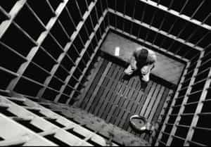
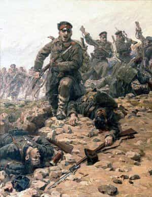
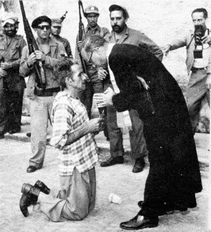

< < < Back
The 5 Most Decisive Moments In A Man’s Life – Return Of Kings
There are moments in a man’s life that fundamentally and forever change who he is. Whether for the better or worse, that can be argued. Of these, few are guaranteed to occur. Some of these opportunities you will seek out. Some you will unquestionably avoid. Others lay in the spectrum of in between. They are primal experiences which touch upon the very basis of existence; firmly grounded in the bedrock of Maslow’s Hierarchy. I cannot say these experiences make you a lesser or better man. But you will never be the man you were before they happened.
1. Your first time

If you weren’t blindingly drunk, trust to the truth that you will not forget the first time a woman (or girl) agreed to have sex with you. The fact that in only the past generation this act now lacks the likely chance of procreation is notwithstanding. Instinctually you sense that sex leads to children and you have been proven worthy by the ultimate gatekeeper of fertility that your hereditary gifts are of value enough for her to invest the better part of 20 years.
Modern society and certainly birth control have cheapened the moment to a degree, but only in the intellectual sense. The pleasurable aspect of what has been called a “sweet surrender” (long before Sarah MacLachlan used the phrase) is inexplicably tied to this ages old triumph of man. Depending on circumstances, this act may have incurred not insignificant risk from a protective father or an inquisitive public entity. But you succeeded in your goal and forever will have the knowledge that you have the skillset required to meet the first and most important biological imperative—reproduction.
2. The birth of your first child
Traditionally, men were absent from this moment, and they were lesser men for it. Perhaps it weakens the more aggressive spirit by tying you so closely to both your progeny and the woman who sacrificed (and will sacrifice much more in the future) to bring him into the world. There are few more helpless moments for a man than to watch the woman he hopefully loves in pain and be powerless to ease her suffering.
There is a buildup of emotions as the pain increases the closer the birth comes. And then there is the crescendo of emotions as the child is born, the woman largely released from her pain, and you gaze, for the first moment, upon your child.
A burden is placed immediately upon you (if you retain an ounce of honor) that will remain forever. But with that burden (and what is a man’s life if completely devoid of duty?) comes the knowledge that a part of you will live on far past your own life. Likewise, the woman whom you have supported has repaid you in full and in a way that remains uniquely the domain of the feminine. And in that moment, as surely as the child has passed the birth canal, the man has changed permanently into a different version of himself.
3. Imprisonment

Captivity is, more so than death, arguably the greatest challenge for a man to face. The knowledge that you are restricted in doing anything of value makes a man of intellect challenge his most basic assumptions and philosophies. It is little surprise then that so many philosophers and writers have described imprisonment as the essential catalyst to their thought and writing. Nietzsche, Solzhenitsyn, Dostoyevsky, Stockdale and countless others have used prison to define who they are and what is truly important to them, their society and what it is to retain control of your spirit when all else is in the control of others. Whether the imprisonment is deserved or not, the man who serves hard time is transformed.
As Nietzsche said upon his release from prison, “That which does not kill me makes me stronger.” Some leave prison a broken shell, others leave determined to make up for the time lost forever and, like Nietzsche, stronger for it but, regardless the direction, a different man than before.
4. Close combat

Men are stronger than women. We rejoice in sports, itself a surrogate for war, in a way the fairer sex does not. We are naturally aggressive, competitive and challenging of others. These traits exist because men, ultimately, exist to fight other men. Either in an aggressive attempt to take that which belongs to others or to defend against the predation of other men. As Hobbes correctly observed, primitive man lived a life nasty, brutish and short. And if you wanted to live long enough to take part in some other, more pleasurable, activities a man had to not only be able to fight, but to win.
Today’s combat generally bears scant resemblance to the shoulder to shoulder slaughter that existed from pre-historic times to the end of the 19th century. The history of combat until the advent of modern firearms ensured you saw your enemy. Close enough to touch him in most instances. Certainly within the distance to see “the whites of his eyes.” Combat was a personal experience. And the odds of victory were fairly even. Your natural abilities, your training, your aggressive spirit and the men to your side were the difference between victory and death.
When you reach that moment and win, it is a primal moment. It brings you instantly back to your vestigial cave man instincts. The varnish of civilization is stripped away and the primordial man stands exposed to the elements. It isn’t pretty. But it is pure. Yet again, a moment from which you emerge a different man.
5. Death

There can be no doubt that death changes a man. And how a man faces the moment of his impending, unquestioned demise is the final, ultimate measurement of what kind of man he is. He alone will stand judge at this moment. For who else would matter? Your reputation will live on. Your children, your friends, your comrades will remember your triumph or failure at this ultimate moment but their opinion will remain withheld from you.
This is not meant, of course, to advocate the embrace of death. Indeed, those who fight against their own death are honored. But so too are those who accept it with dignity and, perhaps, a touch of humor. Obviously a sudden death provides little opportunity for introspection. But hand maiden to the aforementioned combat is the requirement to come to grips with, and accept, the possibility of your own demise. You must know the possibility exists that your life will be forfeited to the requirements of the mission and to the lives of your comrades in arms and we, as a nation, rightfully laud those who do so. It is, after all, this ultimate willingness to sacrifice yourself for the collective defense of your family, your community and your country that makes civilization possible.
There may be other moments in a man’s life that some feel transform him. But I can think of no others that do so on such an elemental basis touching upon the very essence of our being. There may be moments unique to each man that transform him. Challenges perhaps unknown to others. Recognize these moments. Embrace them. Reflect upon them.
And see every setback, no matter how onerous or painful, as an opportunity to become the better man we must desire to be.
Read More: Stop Worshipping Women On The Internet